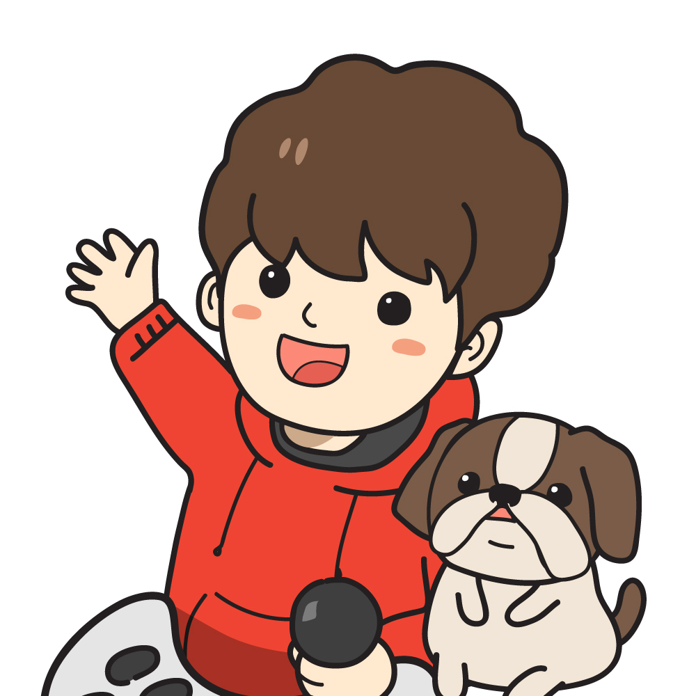
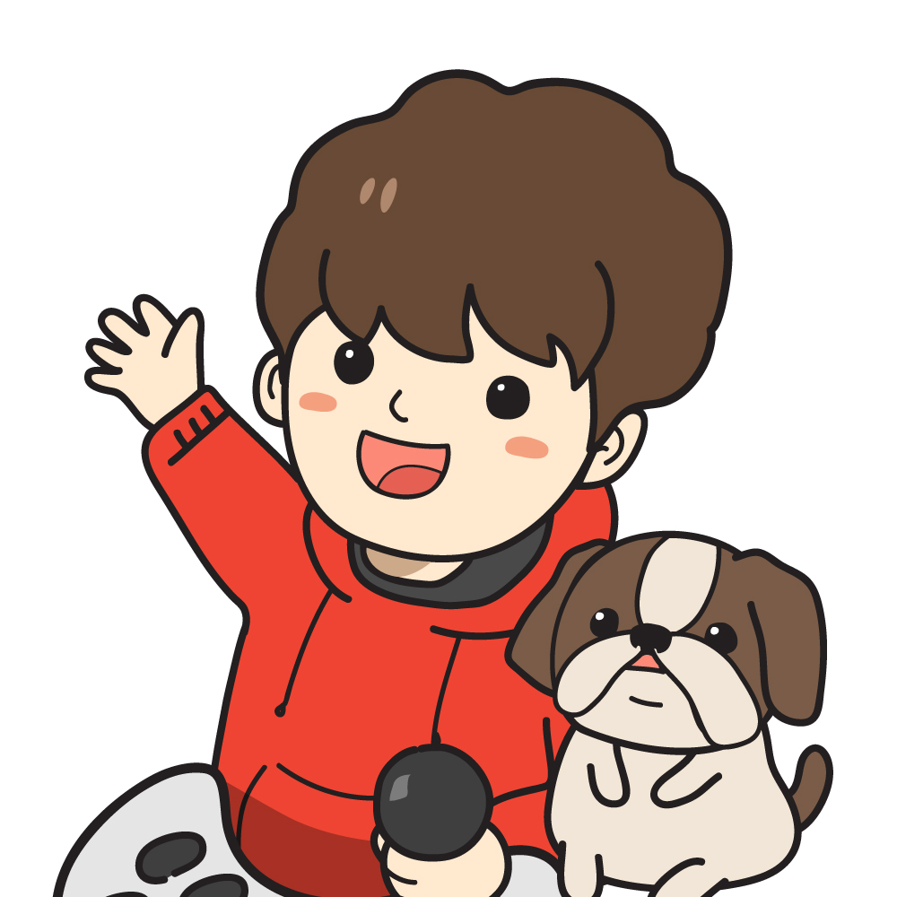

잼뀨TV
잼뀨TV(유튜브 채널)는 2018년 10월 17일 시작한 유튜브 채널로 2019년 1월 1일, 구독자 1,000명을 달성하였다. 이전에는 고지터라는 이름으로 활동하였으며 주로 드래곤볼 레전즈라는 모바일 게임을 중심으로 게임 공략, 캐릭터 리뷰, 가챠 등의 컨텐츠를 제작하고 있다.

잼뀨TV(유튜브 채널)는 2018년 10월 17일 시작한 유튜브 채널로 2019년 1월 1일, 구독자 1,000명을 달성하였다. 이전에는 고지터라는 이름으로 활동하였으며 주로 드래곤볼 레전즈라는 모바일 게임을 중심으로 게임 공략, 캐릭터 리뷰, 가챠 등의 컨텐츠를 제작하고 있다.
